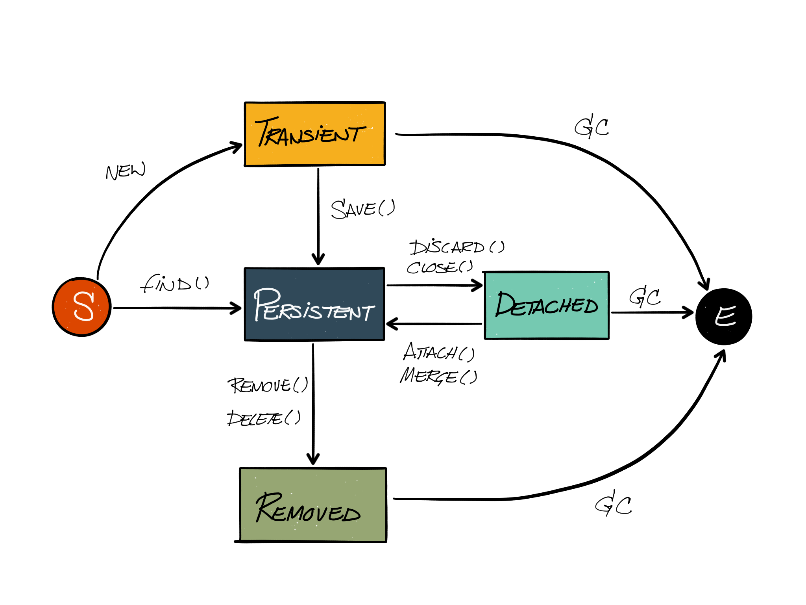

What it is
It removes controller boilerplate.
Controller utils
It removes data access boilerplate.
Data access utils
It simplifies view template authoring.
view template utils
Hibernate is, by far, the Grails concept that's the most complex, weird and hard-to-grasp.
Hibernate /ˈhībərˌnāt/ (lat. hibernatum) 1. A Java Object-Relational Mapping framework that produces DDL, DML and TCL SQL scripts. 2. A leaky abstraction that lures programmers with enchanting features in order to shipwreck their projects on the rocky coast of its island. See sirens.
A simple domain class
class Author {
String name
}
… that creates all this
Using the domain class
def author = new Author(name:'Beckett')
if (author.save(flush:true)) {
// passed validation logic and got saved to the database.
}
Author.list() // selects all Authors from the database
Author.get(1L) // selects the Author where id == 1
Hibernate uses a cache, called the session, to proxy the database.
The hibernate session (part 1)
entity lifecycle

Entity identity
Hibernate uses Java object equality to manage the entities in the session.
Entity identity
Using a business key |
Using an artificial key |
Entity relationships
operation cascading
Database operations cascade from the relationship's owning side the owned side.
operation cascading
Cascading behaviour is altered manually or with the hasMany and belongsTo keywords.
operation cascading
hasMany and belongsTo have multiple and
varying side-effects.
many-to-one
class Author {
Location location
}
class Location {
}
one-to-one
class Author {
static hasOne = [ address:Address ]
static constraints = {
address unique:true
}
}
class Address {
Author author
}
unidirectional one-to-many
class Author {
static hasMany = [ books:Book ]
static mapping = {
books cascade:'all-delete-orphan'
}
}
class Book {
static belongsTo = Author
}
unidirectional ordered one-to-many
class Author {
List books
static hasMany = [ books:Book ]
static mapping = {
books cascade:'all-delete-orphan'
}
}
class Book {
static belongsTo = Author
}
bidirectional one-to-many
class Author {
static hasMany = [ books:Book ]
static mapping = {
books cascade:'all-delete-orphan'
}
}
class Book {
static belongsTo = [ author:Author ]
}
bidirectional ordered one-to-many
class Author {
List books
static hasMany = [ books:Book ]
static mapping = {
books cascade:'all-delete-orphan'
}
}
class Book {
static belongsTo = [ author:Author ]
}
many-to-many
class Author {
static hasMany = [ books:Book ]
}
class Book {
static hasMany = [ authors:Author ]
static belongsTo = Author
}
grails console
Author.withTransaction { tx ->
def beckett = new Author(name:'Samuel Beckett', location:new Location(code:'CDG'))
beckett.addToBooks(new Book(title:'Nouvelles et Textes pour rien'))
beckett.addToBooks(new Book(title:'Malone meurt'))
beckett.addToBooks(new Book(title:'Murphy'))
beckett.save(flush:true, failOnError:true)
}
Author.withTransaction { tx ->
def beckett = Author.lock(1L)
def murphy = Book.findByTitle('Murphy', [lock:true])
beckett.removeFromBooks(murphy)
beckett.save(flush:true, failOnError:true)
}
Author.withTransaction { tx ->
def beckett = Author.lock(1L)
beckett.delete(flush:true)
}
Querying
Cheap and cheerful with PostgreSQL dialect
Book.count() // select count(*) from book
Book.list() // select * from book
Book.get(42L) // select * from book where id = 42
Book.lock(42L) // select * from book where id = 42 for update
Book.list(offset:0, max:10, sort:'title', order:'asc', lock:true)
// select * from book order by lower(title) asc limit 10 offset 0 for update
Dynamic finders
Book.findByTitle("Murphy")
Book.findByTitleLike("Nouvelles%")
Book.findByReleaseDateBetween(lowerBound, upperBound)
Book.findByReleaseDateGreaterThan(someDate)
Dynamic finders
DomainClass.
(count|find|findAll)
By
(Property)(Comparator)
(
(And|Or)(Property)(Comparator)
)*
Book.findAll By Title ILike And ReleaseDate LessThan ("%nouvelles%", releaseDate)
Where queries
def query = Book.where {
publishedOn >= Date.parse('yyyy-MM-dd', '2015-01-01')
}
query.get()
// select * from book b where b.published_on >= '2015-01-01'::date limit 1
query.list()
// select * from book b where b.published_on >= '2015-01-01'::date
query.count()
// select count(*) from book b where b.publishedOn >= '2015-01-01'::date
query.updateAll(information:'New!')
// update book set information = 'New!' where b.publishedOn >= '2015-01-01'::date
query.deleteAll()
// delete from book b where b.publishedOn >= '2015-01-01'::date
Conditional where queries
def makeQuery(params) {
Book.where {
if (params.date) {
publishedOn >= params.date
}
if (params.title) {
title =~ params.title
}
}
}
def params = [
date: Date.parse('yyyy-MM-dd', '2015-01-01'),
title: 'Murphy',
]
def query = makeQuery(params)
query.list()
// select * from book b where b.publishedOn >= '2015-01-01'::date and title ilike 'Murphy'
Composing where queries
def publishedIn2015 = Book.where {
publishedOn >= new Date('yyyy-MM-dd', '2015-01-01')
}
publishedIn2015
.where { title =~ params.title }
.order(params.sortKey, params.sortDirection)
.max(params.limit)
.offset(params.offset)
.list()
// select *
// from book b
// where b.publishedOn >= '2015-01-01'::date
// and
// title ilike 'Murphy'
// order by b.publishedOn desc
// limit 10
// offset 20
Hibernate query language
Out of all the querying APIs, HQL offers the most flexibility and power
HQL
Book.findAll("from Book b where b.title ilike ?", ["%Murphy%"])
Book.findAll("from Book b where b.author.name = ?", ["Samuel Beckett"])
Book.executeQuery("select count(b) from Book b")
Author.executeQuery("select a.name from Author a")
HQL
Author.findAll("""
from Author a left join fetch a.books books
where exists (
from Book b where b in books and b.title like :title
)
""", [title:'%title%'])
Author.executeQuery("""
select a
from Author a left join a.books book
group by a
having avg(book.rating) >= :rating
""", [rating:3.0])
HQL
def session = ctx.sessionFactory.currentSession
// select * from Book b where b.rating > 3 for update
def books = session
.createQuery("from Book b where b.rating > 3")
.setLockMode('b', org.hibernate.LockMode.UPGRADE)
.list()
// update book set rating=? where id in (? , ? , ? , ? , ? , ? , ?)
def updatedCount = session
.createQuery("update Book b set b.rating = :rating where b in :books")
.setParameter('rating', 5)
.setParameterList('books', books)
.executeUpdate()
// delete from book where rating < 2
def deletedCount = session
.createQuery("delete Book where rating < ?")
.setParameter(0, 2)
.executeUpdate()
The hibernate session (part 2)
Lazy loading
By default, many-ended associations
are lazily-loaded.
Lazy loading
Hibernate will only query the database
when an association is accessed
Eager fetching
We can force a database join
and eagerly load associations.
Eager fetching
// with GORM and dynamic finders
Author.list(fetch:[books:'join'])
// with where queries
Author.where{}.list(fetch:[books:'join'])
// with HQL
Author.findAll("from Author a left join fetch a.books")
// in the domain class
class Author {
static hasMany = [books:Book]
static mapping = {
books fetch:'join'
}
}
Pessimistic locking
Pessimistic locking prevents other processes from modifying a record while the owning process is using it.
Optimistic locking
Optimistic locking only checks for concurrent modifications when a process updates the record.
The first update wins.
Optimistic locking
Optimistic locking errors are very common.
Use transactions, pessimistic locking and avoid detached objects if you can.
a note on transactions
def action() {
Author.withTransaction { tx ->
tx.setRollbackOnly() // rollbacks the transaction.
}
Author.withTransaction { tx ->
throw new RuntimeException() // rollbacks the transaction.
}
Author.withTransaction { tx ->
throw new Exception() // *does not* rollback the transaction ಠ_ಠ
}
}
Flush modes
Hibernate as several flush modes. Grails switches between two of them.
Grails' auto flush mode
The hibernate session is automatically flushed before executing certain queries, after committing a transaction and when a web request completes normally.
Grails' MANUAL flush mode
The hibernate session is never flushed
unless explicitely stated.
Grail's flush modes
Grails automatically switches between flush modes…
Grails' flush mode switching
def action() {
// When the action starts, the flush mode is `manual`.
def a = Author.lock(params.id)
a.name = null // invalid value
a.save(flush:true)
// The call to save() validates the entity. Grails sets the entity to
// `read-only` so it will not get flushed. It also sets the flush mode to `manual`.
a.name = 'some valid string'
a.save(flush:true)
// The call to save() revalidates the entity, flips the flush mode to `auto`
// and the entity to `read-write`.
}
Grails' flush modes switching and transactions
def action() {
// When the action starts, the flush mode is `manual`.
Author.withTransaction { tx ->
// The flush mode is set to `auto` upon starting a transaction.
def a = Author.lock(params.id)
a.name = `some name`
// The transaction is committed, dirty checking happens and the entity is persisted.
}
// The flush mode is switched back to `manual` after the transaction.
}
Grails' flush modes and transactions
def action() {
// When the action starts, the flush mode is `manual`.
def a = Author.lock(params.id)
a.name = null // invalid value
a.save(flush:true)
// The call to save() validates the entity. Grails sets the entity to
// `read-only` so it will not get flushed. It also sets the flush mode to `manual`.
a.name = 'some valid string'
Author.withTransaction { tx ->
// Grails switches the flush mode to `auto`. The transaction is commited,
// the session flushed but the entity is still `read-only` and so, not persisted.
}
// Grails switches the flush mode back to `manual`, its value before the transaction.
a.save()
// Grails switches the entity back to `read-write` and the flush mode to `auto`.
Author.withTransaction { tx ->
// The transaction is commited, the session flushed and the now `read-write` entity persisted.
}
// Grails switches the flush mode back to `auto`, its value before the transaction.
}
Who opens and closes the hibernate session?
The OpenSessionInView Interceptor opens a hibernate at the start of the web request and closes it afterwards. It also flushes the session if its configuration file states a default flush mode of “auto”. By default, the project code generator sets the default flush mode to “manual”.